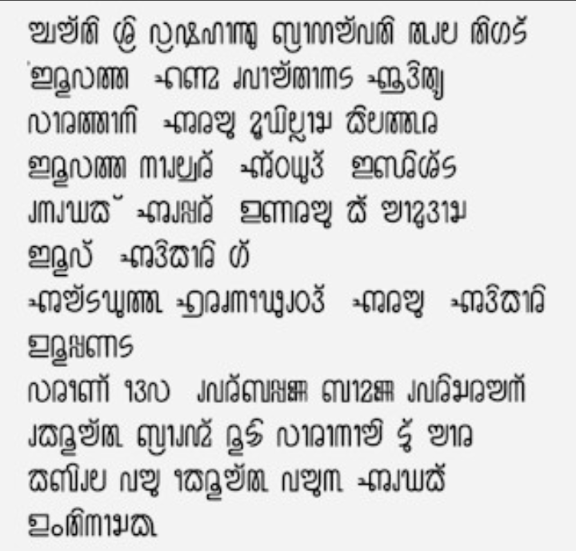

Deciphering Pelattur: The Alupa Dynasty’s 7th–8th Century Inscription
PELATTUR: While modern political efforts focus on the future, the Pelattur inscription reminds us of a grounded, historical past. This stone record is proof of a sophisticated administrative system that functioned in our native script over 1,400 years ago.

The 7th-century slab discovered at Pelattur.

Standardized reading of the ancient phonetics.

Reconstruction for Unicode 16.0 / Gboard integration.
Full Text of the Inscription
The Administrative Autopsy: 1,400 Years of Governance
1. The Council of 24: Pre-Modern Democracy
The mention of 24 representatives from Kilattur is not a minor detail—it is evidence of a **forward-thinking administrative apparatus.** While other regions were under absolute autocracy, the Alupa dynasty utilized a participatory model. This council acted as a legislative bridge between the King (Arasu) and the people, proving that Tuluva society was structurally organized centuries before modern municipal systems were conceived.
2. The Identity of Perbappena Bamanna Pervarasa
In this inscription, we encounter the name **Varandeva Perbappena Bamanna Pervarasa.** This is arguably the longest and most complex Tulu name recorded in early epigraphy. The length and titles attached to the name indicate a highly stratified social and official hierarchy. It reflects a culture where lineage, title, and duty were meticulously documented.
3. Judicial Sovereignty: The Sentencing
The most striking revelation is the legal record of sentencing. The inscription details the punishment of a high-ranking individual for a capital crime. This confirms that 1,400 years ago, Tulu was the **Language of Law.** For a sentence to be etched in stone, the language used must have been the official medium of the court. This shatters the myth that Tulu was never an administrative language.
"If Tulu was used to sentence royalty and organize councils in 700 AD, there is no technical or historical excuse to deny its official status under Article 345 in 2026."
The Administrative Autopsy: 1,400 Years of Governance
The Uruppana Cross-Reference: Verifying the Alupa Timeline
The historical validity of the Pelattur stone is solidified by the mention of Uruppana. This high-ranking officer does not appear in isolation; his name and title are mirrored in both the Vaddarse and Belman inscriptions. This triple-point verification confirms that under Alupa II, a standardized administrative network was in place across the coastal belt.
Archaic Tulu: The Linguistic Frontier
While a modern Tulu speaker might recognize the "soul" of the words, the 7th-century syntax contains archaic features that have since evolved. These "Archaic Markers" are critical for linguistic research:
| Archaic Form (7th c.) | Modern Interpretation | Significance |
|---|---|---|
| Arasu | Arasu / Rajae | Standardized title for Sovereignty. |
| Adikari | Adhikari | Continuity of administrative roles. |
| Tatthu | Selected / Positioned | Archaic verb conjugation. |
Note: The struggle modern speakers face in deciphering these lines is not a sign of a "dead" language, but proof of a living one that has survived and adapted over 1,400 years of continuous use.
The Council of 24: A 7th-Century Tuluva Parliament
The mention of the "Iruvatta Naluveren" (Twenty-Four) is perhaps the most significant political revelation in the Pelattur archive. This was not a mere gathering of elders; it was a structured Administrative Council. In an era where many global empires relied on centralized autocracy, the Alupa state under Alupa II practiced a form of decentralized governance that pre-dates modern parliamentary systems by a millennium.
The Council functioned as a check on royal power. For a king to convene 24 representatives for a judicial sentencing proves that law was a collective responsibility, not a royal whim.
These representatives likely hailed from the "Kilattur" block, indicating that local districts had a direct seat at the table of the Arasu (King).
This administrative richness proves that the coastal belt was not a "frontier" but a highly sophisticated political center. The presence of Uruppana across the Vaddarse and Belman inscriptions with the same authoritative title suggests a "Civil Service" model where officers were rotated or held consistent jurisdiction over the Tulu-speaking provinces.
Tulu: The Medium of Imperial Administration
A common misconception in modern linguistics is that Tulu was "merely a spoken folk language." The Pelattur inscription effectively shatters this narrative. For a language to be used in a legal sentencing involving a high official like Varandeva Perbappena Bamanna Pervarasa, it must possess three critical attributes that Tulu clearly displayed 1,400 years ago:
- Legal Precision: The inscription uses specific archaic Tulu terms to define crimes and punishments. To "sentence" someone in writing requires a standardized vocabulary that all 24 council members and the Adhikari understood.
- Public Record: Stone inscriptions were the "Official Gazettes" of the 7th century. By carving these decrees in Tulu-Tigalari script, the Alupa state recognized Tulu as the language of the Public Record.
- Diplomatic Consistency: The fact that the same administrative titles and scriptural styles appear in Vaddarse and Pelattur shows that Tulu was the Standardized Administrative Language of the Alupa Dynasty.
Beyond Phonetics: Names as Constitutional Titles
The names found in the Pelattur inscription—specifically Uruppana and Varandeva Perbappena Bamanna Pervarasa—serve as linguistic fossils. They reveal a Tulu Nadu that was culturally confident and administratively distinct long before the linguistic reorganizations of modern India.
1. The Enigma of Uruppana
Uruppana appears as a recurring figure of authority. The consistency of this name across the Vaddarse, Belman, and Pelattur inscriptions suggests that "Uruppana" might have been more than a personal name—it may have been a high-ranking Designation or a Sovereign Title within the Alupa administrative framework.
"If the same official signature appears across multiple districts, it proves a centralized Tuluva bureaucracy. This is the hallmark of a Kingdom, not a tribal cluster."
2. Varandeva Perbappena Bamanna Pervarasa: The Linguistic Giant
This is arguably one of the most historically significant names in South Indian epigraphy. Its length—Varandeva Perbappena Bamanna Pervarasa—is not accidental. It is a 'Compound Title' that reflects a sophisticated naming convention:
- Varandeva: Likely a divine or honorific prefix.
- Perbappena: A descriptor of lineage or high-priestly connection.
- Bamanna: A personal identifier connecting to local Tulu roots.
- Pervarasa: Literally 'Great King' or 'Grand Officer' (Per + Arasa), indicating a rank just below the Alupa Sovereign himself.
For a name this complex to be used in a legal sentence, it proves that the Council of 24 operated with high protocol. You do not use 'Pervarasa' titles in casual speech; you use them in formal, written, administrative Tulu.
Elite Names: Titles of Command
The names Uruppana and Varandeva Perbappena Bamanna Pervarasa are historical "heavyweights." The title Pervarasa (Great King/Officer) confirms a high-protocol court environment where Tulu was the primary medium of address. Uruppana’s signature across Vaddarse, Belman, and Pelattur serves as a 7th-century "Civil Service" verification.
Evolution of Authority: Thatthu vs. Nēmaka
A key archaic feature in this inscription is the word Thatthu, used in the context of selection or positioning. In modern Tulu, an administrative appointment would likely use:
- Nēmaka (ನೇಮಕ): The modern standardized term for appointment.
- Serpavune (ಸೇರ್ಪಾವುನೆ): Used in the sense of 'joining' or 'inducting' into a role.
The transition from Thatthu to Nēmaka shows how the language has moved from its raw, ancient roots to a more formal, Sanskrit-integrated administrative register, yet the core power of the Council of 24 remains the foundation of our regional identity.
Closing Thoughts
The Alupa inscription is more than just a historical document; it is a bridge to a bygone era, offering a profound connection to the rich tapestry of Tulu heritage. By preserving and interpreting such inscriptions, we honor the legacy of the Alupa dynasty and celebrate the timeless wisdom they impart.
Let us continue to explore and cherish these remnants of history, for they hold the keys to understanding our past and shaping our future.